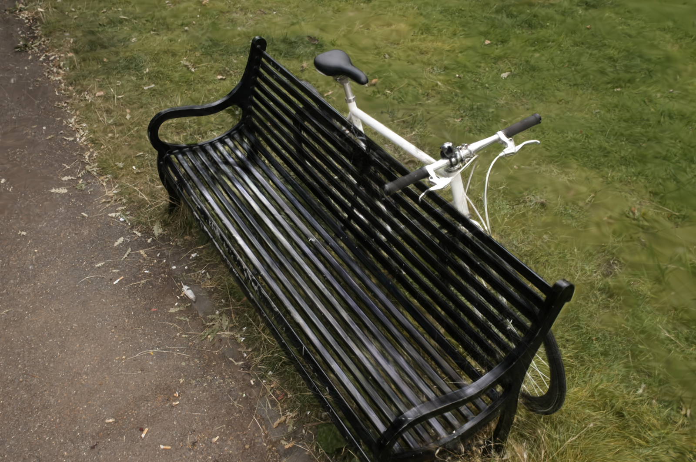
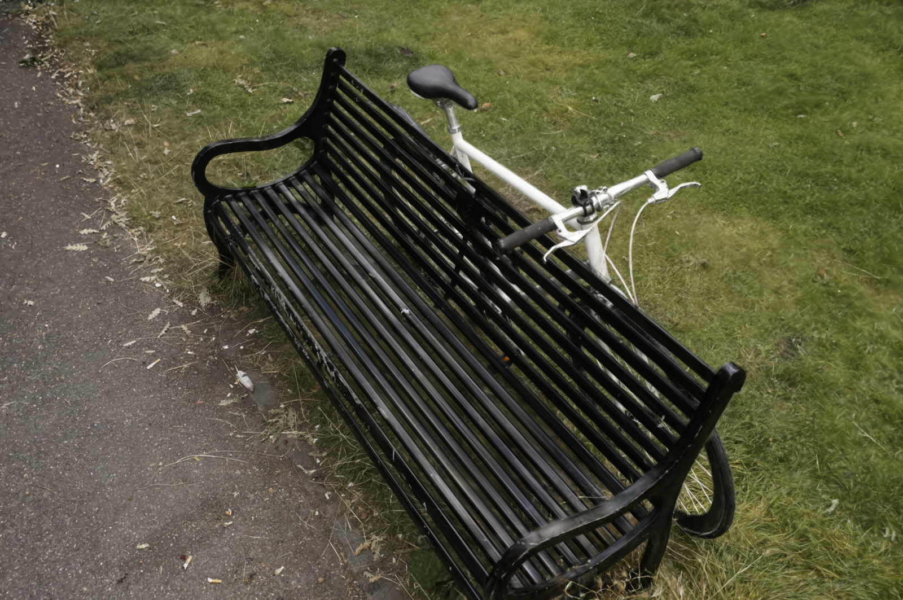
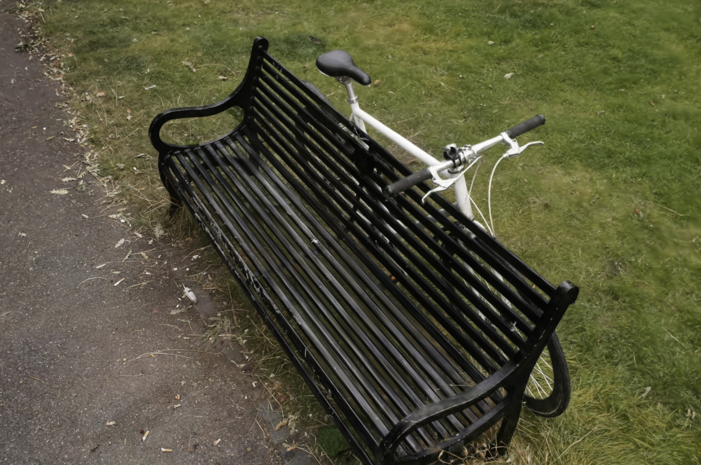
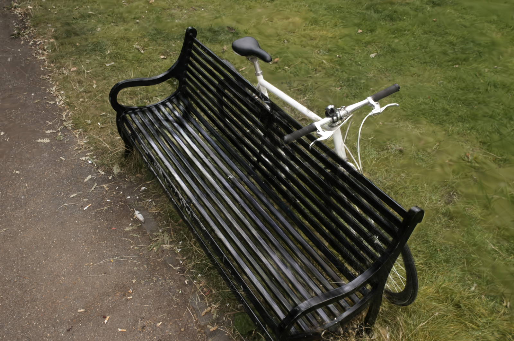
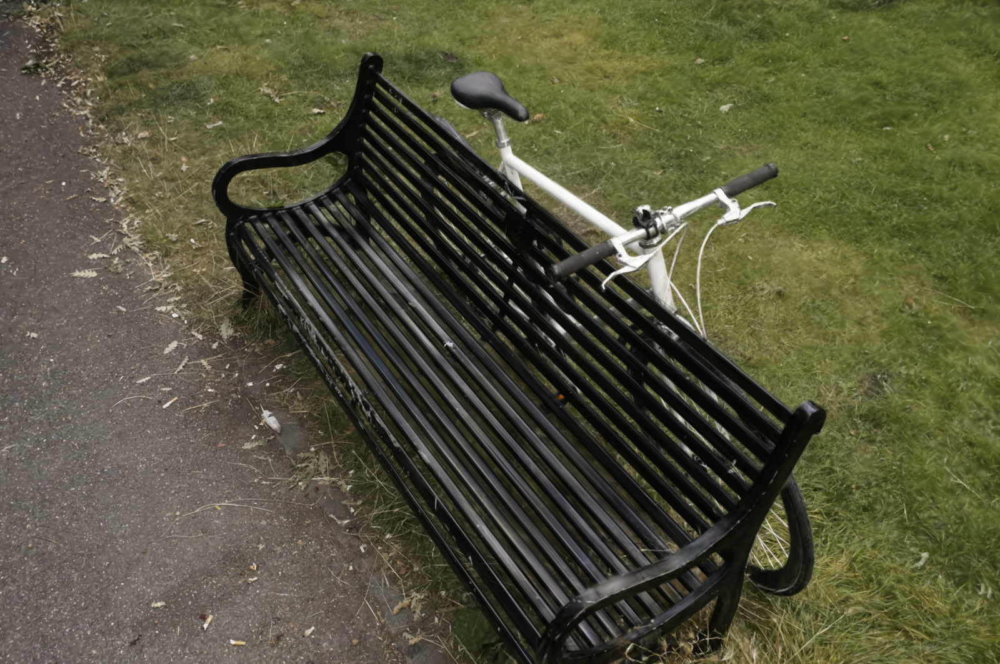
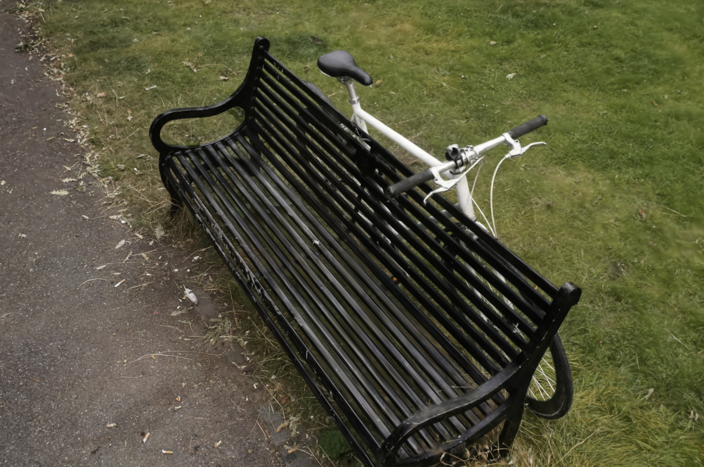

3D Gaussian Splatting (3DGS) achieves photorealistic rendering but requires global sorting for
alpha-blending, causing noticeable ``popping" artifacts and hindering deployment on edge devices.
While sort-free Order-Independent Transparency (OIT) methods circumvent sorting, they introduce
``transparency" artifacts and suffer from inefficiency due to the absence of physical constraints.
To address these limitations, we present Duplex-GS, a dual-hierarchy framework leveraging
proxy-guided spatial organization and a novel hybrid renderer that combines $\alpha$-blending with
reformulated Weighted-Sum Rendering (WSR). We introduce explicit ellipsoidal cell proxies to encapsulate
local Gaussians, which enables efficient proxy-level rasterization. This strategy drastically reduces the
overhead associated with global sorting.
Furthermore, we propose a physically grounded WSR scheme with cell-level early termination, which restores
the physical constraints absent in prior OIT-based 3DGS methods, effectively eliminating both popping
and transparency artifacts.
Extensive experiments on diverse real-world benchmarks demonstrate the effectiveness of the OIT-based
paradigm for 3DGS, enabled by a practical dual-hierarchy implementation.
Quantitatively, our method delivers high-fidelity real-time rendering, outperforming prior OIT-based 3DGS
methods by x1.5~x4 in speed, while reducing radix-sort cost by 29.8%~86.9% compared with conventional
alpha-blending without compromising visual
quality.

 




